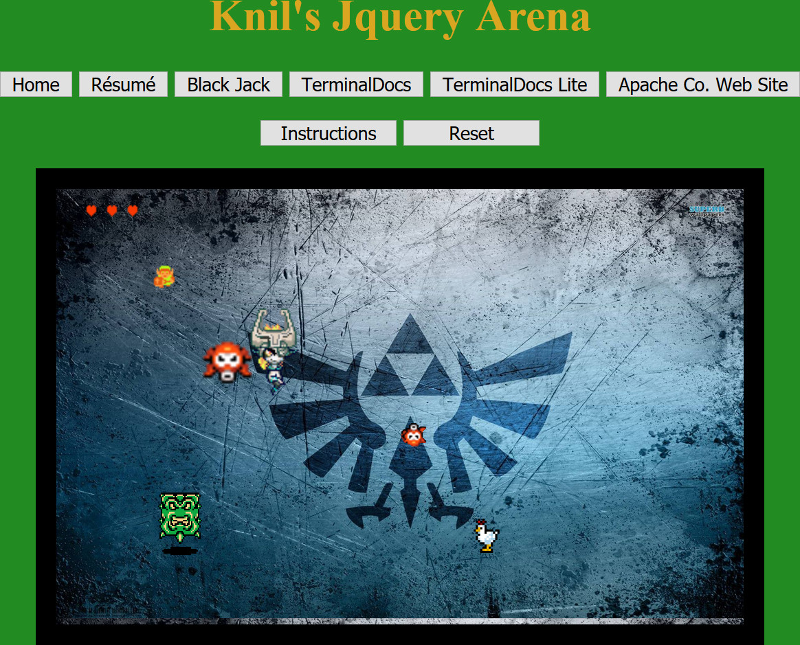
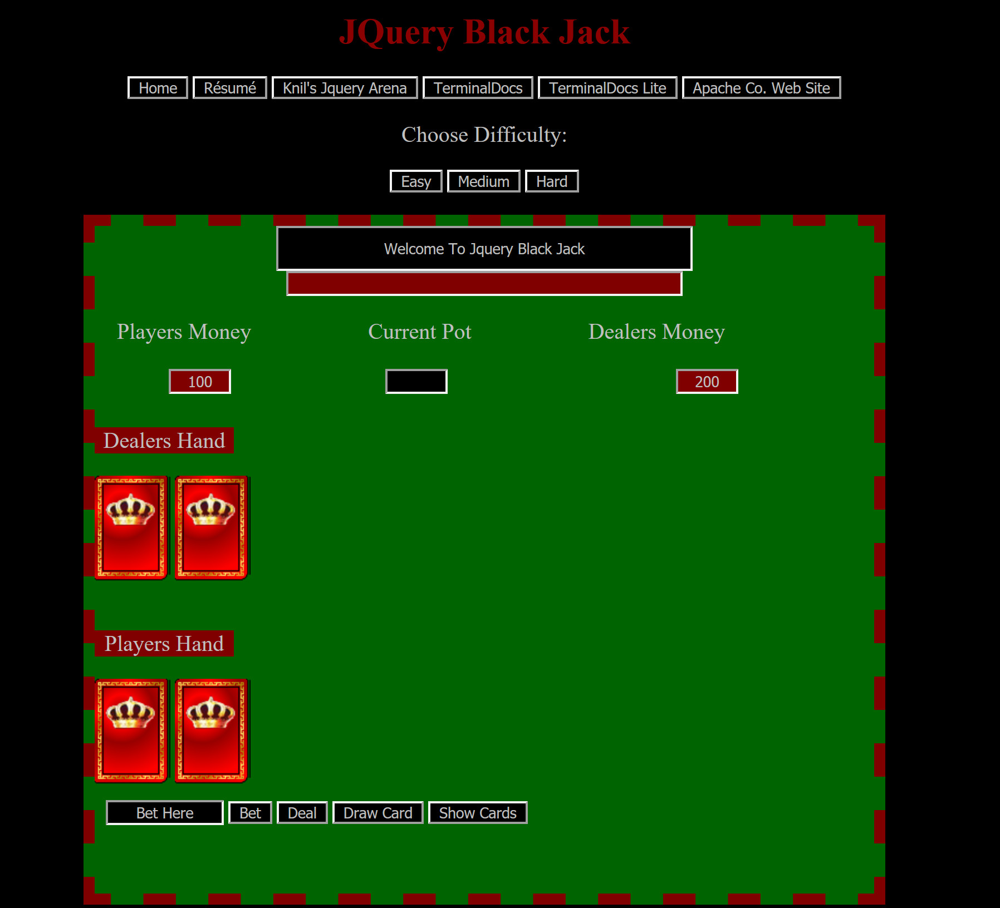
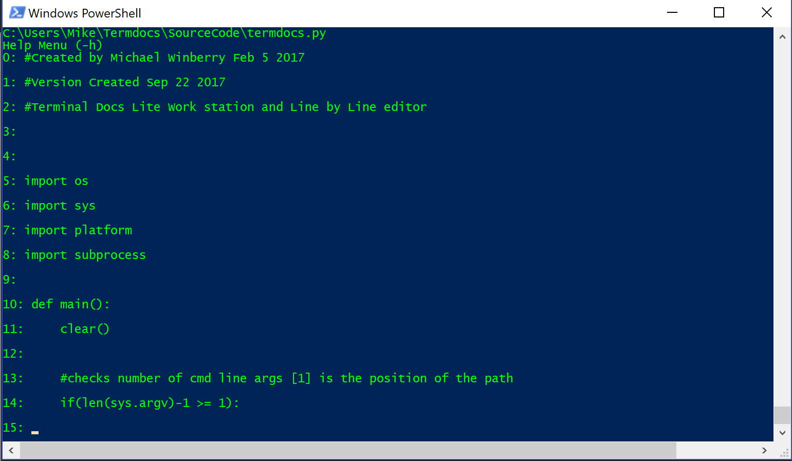
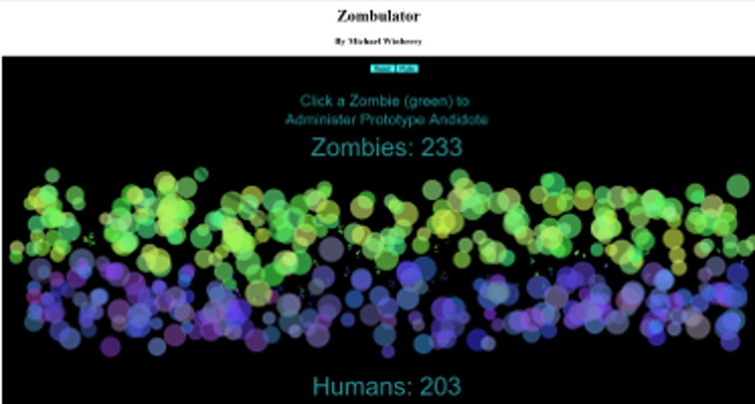

Knil's jQuery arena is a homage to Zelda built using jQuery JavaScript library. It was my first attempt at programming and allows the user to take control of Knil and fight their way through two levels in order to find the obtain the treasured "Knil Force".
Black Jack is as it sounds. A web based game of Black Jack using the jQuery JavaScript library. Pits the user against a computer dealer and has 3 modes of difficulty.
TerminalDocs is a console based text editor that I created using Python 2.7 in order to help me comment, read, and edit code documents line by line. It moves through the text allowing for active insertion and many other built in commands including an open command that opens the file in the users default IDE/text editor in order to make major changes.
Termdocs: lighter version that does not contain a gui based file explorer and relies on manual path input. Also allows for console calling on macOS
Zombulator is a p5.js sketch that tests the mettle of humans against zombies. Allows for user interaction to help administer the antidote to the zombies, and turn the tide for humans.
